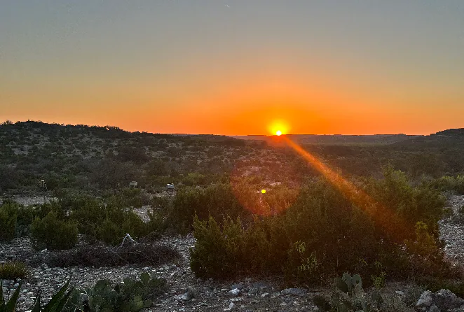

That’s where nourishment happens.
That’s where true connection lives.
That’s where clarity begins to return.
On the hunt, I found myself tracking not just animals—but my own habits, reactions, and distractions. Watching the wind. Noticing sound. Smelling the earth. Imagining where life had just passed through. Every sense alive.
And it reminded me…
This is what the upcoming Primal Reset Retreat in Mount Shasta, CA is about.
It’s not a break from real life—it’s a return to it.
A way to slow time.
To reset the nervous system.
To reconnect with strength, stillness, and meaning.
For men who are high-capacity but stretched thin…
For those longing for deeper connection, even if they can’t name it…
For those sensing that their pace is unsustainable…
This is the invitation.
If that’s speaking to you, or you’re feeling the pull—you can explore the May 17-20th Primal Reset Retreat here.
Every time I’ve followed that pull, I’ve come back more grounded, more present, more available to everything that matters most.
No regrets. Only return.
|